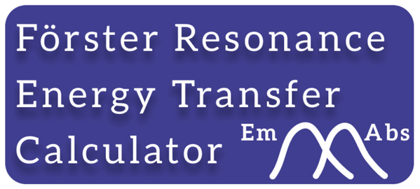

{% extends "base.html" %}

{% block title %}FRET-Calc{% endblock %}

{% block content %}


  <div class="container fret">
    <div>
      <div class="logoWrapper">
        
    </div>
      <div>
         
      </div>
      <div>
         
      </div>
    </div>
    <div class="fret__texto">
      <form method=post enctype=multipart/form-data>

        <div class="texto__botao">
          Input file (.xlsx):<br>
          <input type="file" name="xif"><br>
        </div>

        <div class="texto__botao">
          Extinction coefficient file (.dat):<br>
          <input type="file" name="ecf"><br>
        </div>

        <div class="texto__botao">
          Emission file (.dat):<br>
          <input type="file" name="ef"><br>
        </div>

        <div class="texto__botao">
          Refractive Index file (.dat):<br>
          <input type="file" name="rfi"><br>
        </div>

        <input type="submit" class="texto__botao texto__submitBotao" value="Click to Calculate">
      </form>
      <footer class="texto__botao texto__footer">
        <p class="texto__paragrafo"> 
          If you used this tool in your data analysis, please indicate so by citing 
          <a href="https://doi.org/10.1016/j.cpc.2023.108715">
            <b>FRET−Calc: A Free Software and Web Server for Förster Resonance Energy Transfer Calculation</b>
          </a> in your work.<br><br>
        Download some <a href="https://github.com/NanoCalc/FRETCalc/releases/download/2.0-beta/data-sample.zip"><b>sample data</b></a>, 
        <a href="https://github.com/NanoCalc/FRETCalc/releases/download/2.0-beta/spectral-data.zip"><b>spectral data for different compounds</b></a>,
        and <a href="https://github.com/NanoCalc/FRETCalc/releases/tag/2.0-beta"><b>FRET-Calc binaries</b></a> on our GitHub page.
        </p>
      </footer>
    </div>
  </div>
{% endblock %}
